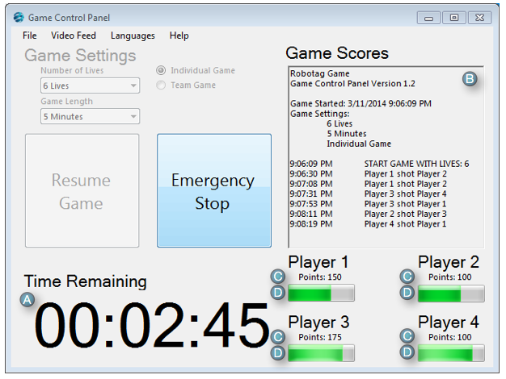

Description of Indicators

Game in Progress
- A-Time Remaining:
- Displays the time remaining in the game.
- B-Game Scores:
- This text box will display the contents of the GameScores.txt file.
- C-Points Indicator:
- The number underneath the player or team indicates how many points that team or player has earned during the duration of the game.
- D-Life Indicators:
- The green rectangles underneath the player or team names indicate how much life each player has remaining in the game. When the rectangle is completely full with the green bar the player or team has the maximum number of lives. When the rectangle is completely empty of the green bar that player or team does not have any life remaining.